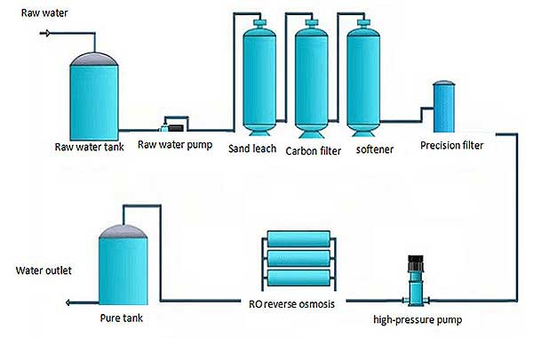

Reverse Osmosis (RO) systems provide high-quality water by removing dissolved impurities, heavy metals, and contaminants. Explore the features, process, and applications of RO systems below.
Overview
Reverse Osmosis (RO) systems utilize a semi-permeable membrane to remove dissolved solids, heavy metals, and impurities. It is one of the most efficient methods of water purification, ideal for residential, commercial, and industrial use.
Features
- Advanced Semi-Permeable Membrane for high TDS removal.
- Multi-stage filtration: Sediment, Carbon, and RO membrane.
- Compact design for space-efficient installation.
- Removes heavy metals, bacteria, and viruses effectively.
Process
The RO system process consists of the following stages:
- Pre-Treatment: Sediment and carbon filters remove larger particles and chlorine.
- Reverse Osmosis: Water is pushed through a semi-permeable membrane to remove dissolved solids.
- Post-Treatment: Activated carbon filters polish water for taste and odor.
- Storage: Purified water is stored in a tank, ready for use.

Applications
- Residential: Provides safe drinking water for households.
- Commercial: Used in offices, schools, and restaurants.
- Industrial: High-capacity systems for manufacturing and processing.
Water Usage Calculator
Calculate how much water your household or facility uses daily to estimate the necessary capacity of an RO system.